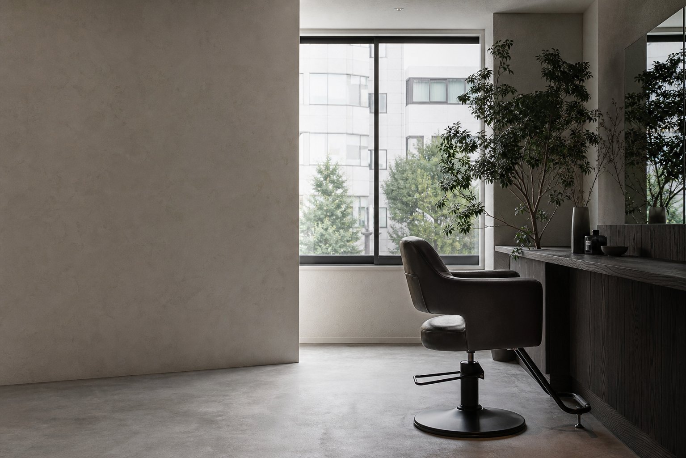
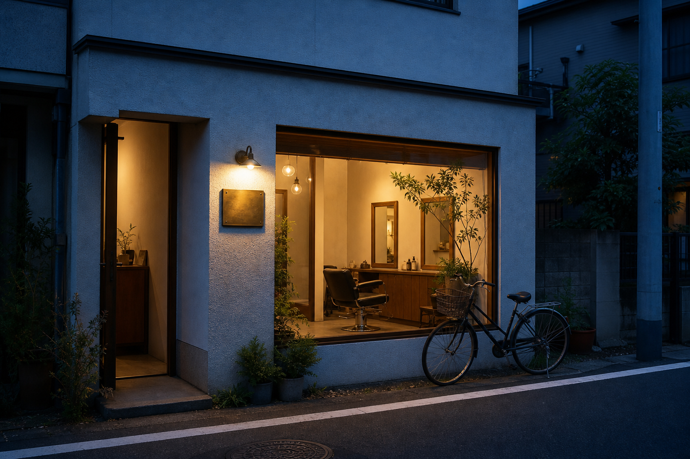

About us / 01
似合う、よりも。
心地いい、を。
余白は予約制の小さなヘアサロンです。髪質や生活のリズムを伺いながら、明日から扱いやすいスタイルをご提案します。
施術のあいだも、帰り道も。少し気分が軽くなる時間でありますように。
Services / 02
今日の自分に、
ちょうどいい仕立て。
- カット・スタイリング¥ 6,600
- カラー・トリートメント¥ 12,100〜
- 前髪メンテナンス¥ 1,650
Booking / 03
次のひと枠を、
お選びください。
表示はデモです。実際の予約にはつながりません。
6月14日（土）
ページを開くたび、空き枠の表示が変わります。

Access / 04
お会いできる日を、
楽しみにしています。
- 住所
- 東京都○○区○○ 2-4-8
- 営業時間
- 10:00 — 19:00
- 定休日
- 火曜日・第3水曜日